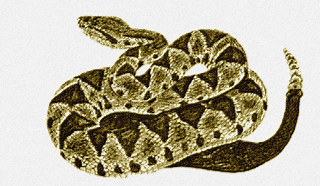

EKANS-023

O Pokémon Cascavel
Pokémon Antecessor na Pokedex: FEAROW-022 
Pokémon Sucessor na Pokedex: ARBOK-024 
POKÉMON N°023-EKANS

------------------------------------------------------------------------------------- 

 Este pokémon possui coloração roxa com uma listra amarela no entorno de seu pescoço e é considerado muito silencioso e habilidoso, e essas duas caracteríticas permitem com que ele coma ovos de pokémon pássaro (como Pidgey (link: Pidgey-016) e de Spearow (link: Spearow-021)) sem ser notado.
Quando está deitado, ele fica numa posição de forma espiralada que abre um campo de visão e de posicionamento para botes que o permite atacar ou se defender. Caso se sinta ameaçado, vibra o seu chocalho, buscando afastar o inimigo.
Este pokémon possui coloração roxa com uma listra amarela no entorno de seu pescoço e é considerado muito silencioso e habilidoso, e essas duas caracteríticas permitem com que ele coma ovos de pokémon pássaro (como Pidgey (link: Pidgey-016) e de Spearow (link: Spearow-021)) sem ser notado.
Quando está deitado, ele fica numa posição de forma espiralada que abre um campo de visão e de posicionamento para botes que o permite atacar ou se defender. Caso se sinta ameaçado, vibra o seu chocalho, buscando afastar o inimigo.
------------------------------------------------------------------------------------- Aparições em jogos (Capturável no próprio jogo)
- Pokémon Red
- Pokémon Gold
- Pokémon Sylver
- Pokémon Crystal
- Pokémon FireRed
- Pokémon Diamond, Pokémon Pearl & Pokémon Platinum
- Pokémon HeartGold & Pokémon SoulSilver
- Pokémon X & Pokémon Y
- Pokémon Ultra Sun & Pokémon Ultra Moon
- Pokémon Let's Go Eevee
- Pontos de Vida=35
- Ataque=60
- Defesa=44
- Ataque Especial=40
- Defesa Especial=54
- Velocidade=55
- Total=288
COLORAÇÃO E EVOLUÇÃO
Comparação de Colorações

Comparação Ekans X Arbok
Ekans evolui para Arbok no nível 22, aumentando drasticamente seu peso e tamanho e adquirindo características mais medonhas como uma membrana entornando sua cabeça e seus pescoço (semelhante à uma Naja), permitindo assim intimidar pokémon maiores. Além disso, seu veneno se torna ainda mais potente.
| Pokémon | Tipo | Tamanho | Peso |
|---|---|---|---|
| Ekans | Venenoso | 6'07" = 2.0 metros de comprimento | 15.2 lbs. = 6.9 kg (Quilogramas) |
| Arbok | Venenoso | 11'06" = 3.5 metros de comprimento | 143.3 lbs. = 65.0 kg (Quilogramas) |
FONTES E REFERÊNCIAS
--------------------------------------------------------------------